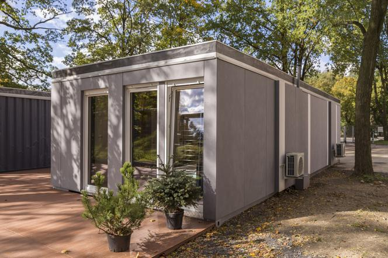

Nasze Dotychczasowe Dokonania
Oto przykład jednej z konstukcji wykonanej z naszych materiałów, bez infomracji o tym, że jest on wykonany z śmieci nikt by o tym nawet nie pomyślał Znaczącym argumentem dlaczego dużo frim decyduje się na wukorzysytwanie naszych produktów jest to, że cena takiej kontrukcji jest o 40% tańsza niż ten sam lecz z innych materiałów dostępnych na rynku materiałów. Co sprawia, że oszczedność nawet do 120tyś. złotych